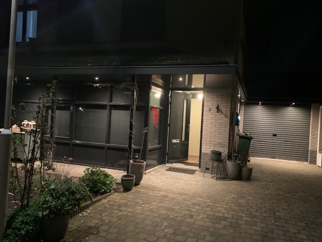
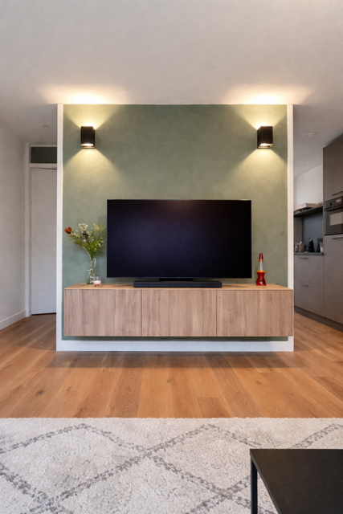

Van buitenverlichting tot inbouwspots en stopcontacten — kleine klussen, grote vakkennis.
Spots en gevellampen voor buiten — strak gemonteerd en duurzaam aangesloten.
Nieuwe stopcontacten plaatsen of verplaatsen, veilig en netjes weggewerkt.
Camera's ophangen en aansluiten zodat je thuis of via je telefoon alles in de gaten kunt houden.
Inbouwspots frezen en plaatsen voor een strakke, moderne uitstraling in huis.
LED-verlichting onder elke trede voor een veilige en sfeervolle trap, dag én nacht.
Van slimme thermostaten tot een volledig Smart Home Energy Management System — ik help jouw woning energie-efficiënter en slimmer maken.
Ik ben een beginnend elektricien uit de regio Utrecht met een grote passie voor mijn vak. Ik doe voornamelijk kleine klussen bij particulieren thuis — van een extra stopcontact tot een complete lichtinstallatie. Ik werk altijd netjes, precies en lever kwaliteit af waar ik trots op ben.
Geen grote aannemer, maar iemand die echt de tijd voor je neemt.
Een greep uit de klussen die ik heb uitgevoerd — elk project netjes en vakkundig afgewerkt.
De klant wilde de trap een moderne, sfeervolle uitstraling geven. Ik heb LED-strips onder elke trede gemonteerd, de draden gesoldeerd en alles netjes weggewerkt. Sleep de schuifregelaar om het verschil te zien!
"Ik had al een tijdje plannen voor trapverlichting maar wist niet goed hoe. Wouter heeft het gewoon perfect gedaan, je ziet niks van de draden en 's avonds ziet de trap er echt mooi uit. Mijn man was ook super blij!"— Marieke, Utrecht

De klant had slechts één buitenlamp die weinig uitstraling had. Ik heb de oude lamp verwijderd en 8 spots strak langs de gevel gemonteerd. De kabels zijn boven de gevelpanelen door de muur gevist zodat er buiten niets zichtbaar is.
"Eerlijk gezegd had ik niet verwacht dat het zoveel verschil zou maken. Maar 's avonds als ik thuiskom en de voortuin zo verlicht zie... echt heel erg mooi geworden. Snel geregeld ook!"— Sandra, Nieuwegein

Van een kale gipsmuur naar een strak tv-geheel. Ik heb twee wandspots gevreesd en ingebouwd aan weerszijden van de tv-nis, en een stopcontact verborgen in het meubel. Geen zichtbare kabels meer — alles netjes weggewerkt.
"We hadden zelf al van alles geprobeerd maar het zag er nooit netjes uit. Wouter snapte meteen wat we wilden en heeft het in één keer goed gedaan. Geen losse kabels meer, eindelijk!"— Thomas & Laura, Utrecht
Heb je een klus waarvoor je een elektricien nodig hebt? Stuur een berichtje en ik kom graag langs voor vrijblijvend advies.